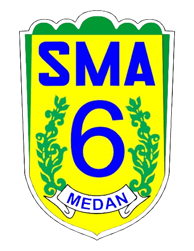

MPK SMA Negeri 6 Medan
Majelis Perwakilan Kelas Periode 2025/2026
"Satu Visi, Satu Pandangan"
Jl. Ansari No.34, Medan

Majelis Perwakilan Kelas Periode 2025/2026
Jl. Ansari No.34, Medan
MPK SMA Negeri 6 Medan merupakan wadah aspirasi siswa yang aktif, transparan, progresif, dan berintegritas dalam mengawal suara siswa serta membangun budaya organisasi sekolah yang demokratis.
Landasan utama pergerakan organisasi
Menjadikan MPK sebagai lembaga aktif, transparan, dan berintegritas dalam mengawal aspirasi serta membangun budaya organisasi progresif.
1. Mengawasi kinerja OSIS.
2. Menjadi saluran aspirasi siswa.
3. Menumbuhkan kepemimpinan anggota.
4. Evaluasi organisasi rutin.
Susunan lengkap kepengurusan MPK SMA Negeri 6 Medan
Ishaq Newton Simbolon
Natasya Adellia P. Tanjung
Nayla Saskia
Clarissa Hyacinta
Syauqi Aldrinov
Adhim Akbar Ginting
Febryano Pradytama
Vikram AssyahriMuhammad Fariz
Safira WilandryBagus Tegar Wasa
Nasywa SediantoProgram unggulan MPK SMA Negeri 6 Medan
• Menghidupkan Instagram MPK
• Pengarsipan Google Drive
• Menyusun AD/ART
• Pengawasan ekstrakurikuler
• Penyelesaian masalah ekskul
• Legalitas ekskul
• Buku dosa OSIS
• Evaluasi wajib
• Penilaian siswa
• Laporan kinerja
Terhubung bersama MPK
Instagram: @mpksman6medan
Sekolah: SMA Negeri 6 Medan
Alamat: Jl. Ansari No.34, Medan